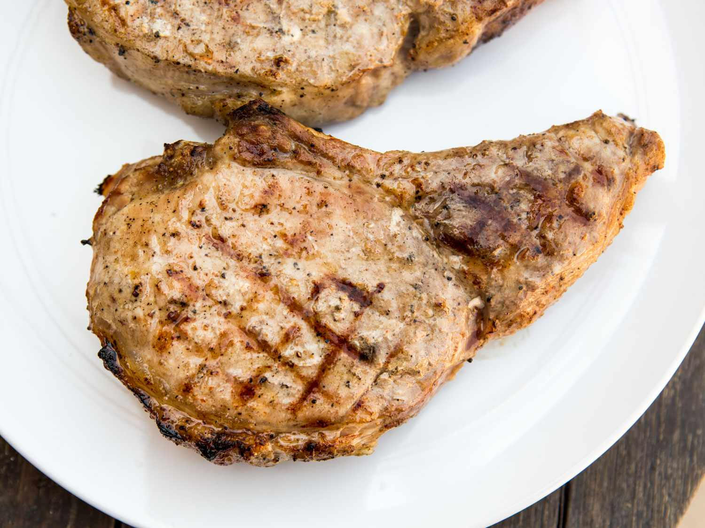

Pan-Fried Pork chops/h1>

4 Ingredient Pork Chops
Few things are as easy to prepare as these pan-fried boneless pork chops.
They take only minutes to prepare! The emphasis is on the great flavor
of pork, so if you'd like more seasoning, go for it. For perfectly done
chops, always use a meat thermometer.
Ingredients
- 14 boneless pork chops, 3/4 inch thick
- Salt and freshley ground pepper
- 2 tablesspoons all purpose flower
- 1/2 cup cooking oil
Steps
- Do not pat chops dry, so seasonings and flour will stick.
- Season both sides of pork chops with salt and pepper,
then sprinkle with flour on both sides. Use the back of a spoon
to distribute the flour over the entire surface.
- Heat oil in a 12-inch non-stick skillet over medium heat until
it shimmers. Carefully add pork chops and pan fry until brown,
about 4 minutes. Do not disturb the chops until ready to turn.
- When you see the edges of the chops turn brown, turn, and pan fry the
other side until no longer pink on the inside and brown on the outside,
an additional 4 minutes. An instant-read thermometer inserted into the
center should read 145 degrees F (63 degrees C). Reduce heat, if they
are browning too quickly. Serve warm.